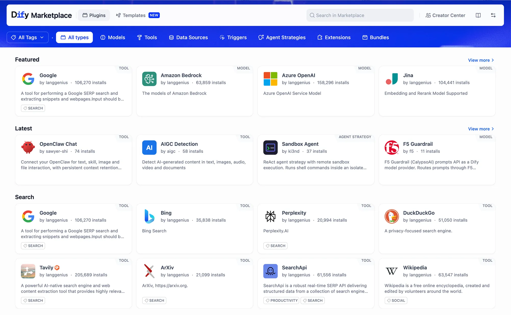

Dify ecosystem
Marketplace
A guide for technology partners
From publishing a plugin to helping a user complete a task.
Dify ecosystem
From publishing a plugin to helping a user complete a task.
Marketplace
Builders can install models, tools and data sources. Partners can package a plugin in a template with setup steps and a sample input so users can try it in their own workspace.

Workflow
The model proposes a search topic. A branch calls Tavily Search and saves the findings in a variable. A reasoning model then uses the collected material to compose an answer.

Knowledge pipeline · RAG
For document Q&A, a pipeline reads and processes source material into a knowledge base. At query time, a workflow retrieves relevant passages and gives them to the model as evidence for its answer.

Partner program · pilot framework
For listed products testing demand. Prepare a demo, record a baseline and user feedback, and review results on day 30.
For integrations with evidence of use. Review a template, publish joint content or host a technical event, then review conversion.
Build a flagship solution around a shared customer need. Name owners on both sides, validate with customers, launch together and track outcomes.
C is a product discovery stage. A and B partner status requires mutual confirmation. Listing, certification and promotional placement each have their own review.
Example engagement · Tier B
For a document Q&A template, supply the plugin, a sample document, setup instructions and a maintainer so another builder can reproduce an answer.
Review the template together, then choose a tutorial or a live technical demo. Agree on team capacity, channel, dates and owners in advance.
Find where users stopped, revise the setup or guide, and agree on what to test next.
Measuring adoption
Define success, such as a template retrieving its sample document for the first time. Record the baseline, data source and observation window.
Track installs, first successful use and repeat use separately. Count each activated workspace once and exclude internal tests, bots and anomalous traffic.
Teams can apply for a featured slot. Track the 30-day validation window separately from actual exposure. Placement and display dates depend on the confirmed schedule.
Starting a partnership
Share the product or plugin link, who it serves and the task they need to complete.
Include a template or workflow, sample input, expected output and a maintenance contact.
Bring any user feedback. Together, review quality, safety and maintenance, then agree on deliverables, resources and a review date.